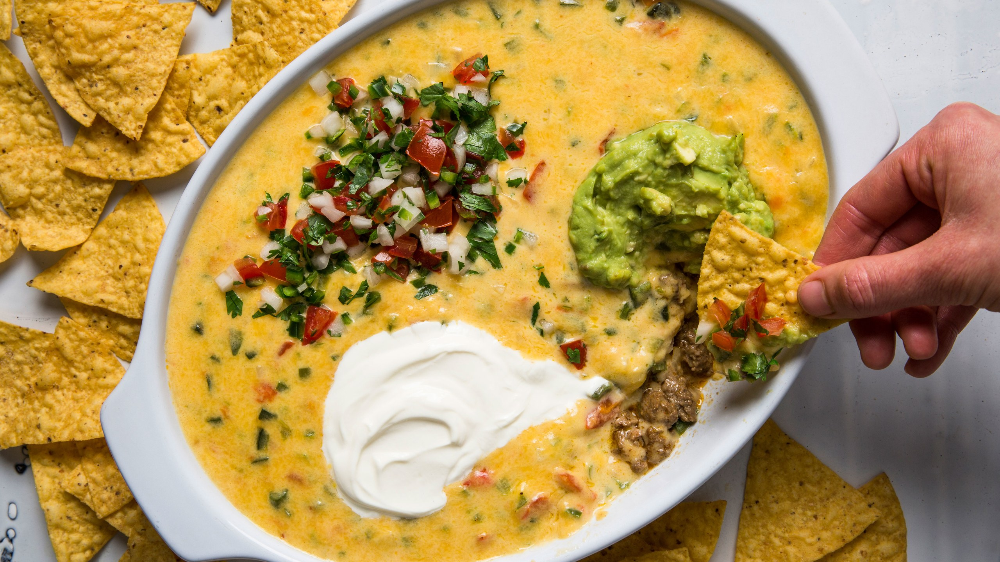

Queso con Picadillo

The signature dish at Matt’s El Rancho in Austin, Texas, named after former Texas land commissioner Bob Armstrong, who one day asked them to make him “something different.” What resulted was a now-legendary layered dip of taco meat, queso, guacamole, sour cream, and pico de gallo. Important: Don’t used aged or extra-sharp cheddar, which is drier and doesn’t melt smoothly.
- 8 bowls
- 30 minutes
- 30 minutes
Ingredients
- 1 pound ground beef chuck
- 1 medium onion, chopped
- 1 red bell pepper, chopped
- 5 garlic cloves, finely minced
- 1½ teaspoons ground cumin
- 1 teaspoon chili powder
- 3 tablespoons unsalted butter
- 2 large poblano chile, chopped
- 4 jalapeños, finely chopped
- 2 medium tomatoes, chopped
- 2 tablespoons all-purpose flour or cornstarch
- 1½ cups milk
- ½ pound Monterey Jack cheese, grated
- ½ pound sharp cheddar cheese, grated
- Cilantro
- Kosher salt, freshly ground pepper
Directions
- Cook beef in a large saucepan, breaking up with a spoon, until browned on all sides but not completely cooked through, 6–8 minutes.
- Reduce heat to medium and add onion, bell pepper, garlic, poblanos, and jalapeños stirring, until tender but not browned, 6–8 minutes; season with salt and pepper. Add cumin and chili powder and cook, stirring, until fragrant, about 1 minute.
- Add butter and tomatoes to the saucepan, season with salt, and continue to cook until juices have evaporated, about 6 minutes. Stir in flour or cornstarch and cook until incorporated, about 1 minute.
- Whisk in milk and continue to cook until mixture comes to a boil and thickens, about 4 minutes. Reduce heat to low, gradually add both cheeses, and cook, stirring constantly, until cheese is completely melted and queso is smooth. If it seems too thick, stir in a little more milk.
- Sprinkle with freshly chopped cilantro and serve warm with corn chips.